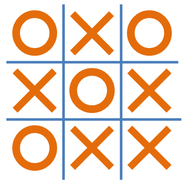
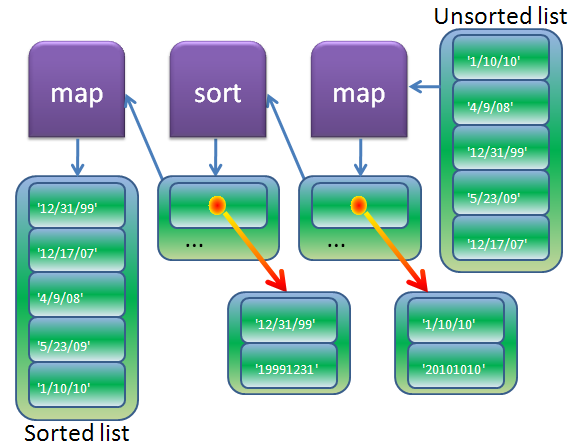

The Arrow Operator and Multidimensional Arrays
AAHCClick on A to make all fonts on the page smaller.
Click on A to make all fonts on the page larger.
Click on HC to toggle high contrast mode. When you move your mouse over
some bold words in high contrast mode, related words are automatically highlighted. Text is shown
in black and white.
Lesson Objectives
When you complete this lesson, you will be able to:
Welcome back to your Advanced Perl course! Can you believe it? We're already past the halfway point in the course.
The Arrow Operator
If you find some of the expressions involving references complicated, you're not alone. It can still be pretty challenging
even after you know how to construct or read an expression like:
OBSERVE:
${ $refs[1] }{ $$alt_furn_ref[2] }
Fortunately, there's the
arrow operator:
->.
The arrow operator
makes more complex code easier to read.
It's a
binary infix operator, which means it operates on two things, one to its left and one
to its right (
+ is another such operator):
LEFT->RIGHT
The operation it performs depends on what's on the right side. The arrow operator is used for several
purposes; first we'll see how the arrow operator
accesses members of aggregates pointed to by references.
That means we can use it to get at an element of an array, given an array ref, or an element of
a hash, given a hash ref. Let's try an example. Create arrow.pl in
your /perl3 folder as shown:
CODE TO TYPE:
#!/usr/bin/perl
use strict;
use warnings;
my @clouds = qw(cumulus nimbus cumulonimbus stratus cirrus);
my $clouds_ref = \@clouds;
print "Cloud types:\n";
print "\t $clouds_ref->[$_]\n" for 0 .. $#$clouds_ref;
# http://www.navy.mil/navydata/questions/bells.html
my %mid_bells = ( one => '0030', two => '0100', three => '0130', four => '0200',
five => '0230', six => '0300', seven => '0330', eight => '0400' );
my $mid_ref = \%mid_bells;
print "Fourth mid bell is at $mid_ref->{four}\n";
 and run it by typing the commands below as shown:
and run it by typing the commands below as shown:
INTERACTIVE SESSION:
cold:~$ cd perl3
cold:~/perl3$ ./arrow.pl
Cloud types:
cumulus
nimbus
cumulonimbus
stratus
cirrus
Fourth mid bell is at 0200
In the above example the arrow operator works with curly braces.
When using the arrow operator, if the right side consists of curly braces around an expression, then the right side is interpreted as
braces around a hash key, the left side must be a reference to a hash, and the result is the element with that
key in the hash pointed to by the reference.
Now we'll use the arrow operator with square brackets to improve the readability of an earlier program.
When using the arrow operator, if the right side consists of square brackets around an expression, then the right side is interpreted
as brackets around an array index, the left side must be a reference to an array, and the result is
the element at that index of the array pointed to by the reference.
Go to
your /perl3 folder, open
ref_rules.pl and modify it as shown:
CODE TO TYPE:
#!/usr/bin/perl
use strict;
use warnings;
my $furn_ref = [ qw(sofa chair loveseat piano credenza) ];
my $cost_ref = { sofa => 1500, chair => 300, loveseat => 800, piano => 6000, credenza => 500 };
# Rule 1
print "Cost of third item from \$furn_ref is: ",
$$cost_ref{ $$furn_ref[2] },
$cost_ref->{ $furn_ref->[2] },
"\n";
# Rule 2
my $alt_furn_ref = [ qw(bed rug rocker stool) ];
my $alt_cost_ref = { bed => 3000, rug => 75, rocker => 450, stool => 125 };
my @refs = ( $cost_ref, $alt_cost_ref );
print "Cost of third item in \$alt_furn_ref from second reference in array is: ",
${ $refs[1] }{ $$alt_furn_ref[2] },
$refs[1]->{ $alt_furn_ref->[2] },
"\n";
and run it.
The output will be the same as
before, only the code syntax has changed.
We could change some of our other earlier programs in the same way. This code fragment:
OBSERVE:
print "I have $$stock_ref{ants} ants\n";
...could be replaced with this:
OBSERVE:
print "I have $stock_ref->{ants} ants\n";
...because the arrow operator also works when interpolated in double-quoted strings.
The arrow operator can only be used to get elements of an aggregate using a
reference, so there are still times that you'll need to use the dereferencing rules from the last lesson; if you want to access the whole
aggregate, for instance, to get the keys of a hash.
(You will see more uses of that in the next
few lessons.) But we'll use the arrow syntax from now on for all accesses of aggregate members.
So, what happens if the reference doesn't point to the
correct type of thing? Let's find out using this one-liner:
INTERACTIVE SESSION:
cold:~/perl3$ perl -wle '$h_ref = { J => 10, Q => 10, K => 10 }; print $h_ref->[42]'
Not an ARRAY reference at -e line 1.
That's a fatal run-time exception. The right side of the arrow operator has
square brackets, so it expects the left side to be a reference to an array.
Let's do one more arrow operator example, this time using a possible solution to the Lesson 8 project. Create
hash_compare.pl in your /perl3 folder as shown:
CODE TO TYPE:
#!/usr/bin/perl
use strict;
use warnings;
my %first = ( Wallace => 1, Gromit => 2 );
my %second = ( Gromit => 2, Wallace => 1 );
compare( \%first, \%second );
%first = ( Kirk => 'Captain', Spock => 'First Officer', McCoy => 'Doctor' );
%second = ( Spock => 'First Officer', McCoy => 'Doctor' );
compare( \%first, \%second );
%first = ();
%second = ();
compare( \%first, \%second );
%first = ( Wallace => 1, Gromit => 2 );
%second = (Wallace => 2, Gromit => 1);
compare( \%first, \%second );
%first = (Wallace => 1, Gromit => 2);
%second= (Wallace => 1, Gromit => 2, Shawn => 3);
compare( \%first, \%second );
sub compare
{
print "Hashes are ", compare_hashes( @_ ) ? "EQUAL" : "NOT EQUAL", "\n";
}
# The following routine was the homework
sub compare_hashes
{
my ($h1_ref, $h2_ref) = @_;
return 0 if keys %$h1_ref != keys %$h2_ref; # Unequal # of elements
for ( keys %$h1_ref )
{
return 0 if ! exists $$h2_ref{$_} || $$h1_ref{$_} ne $$h2_ref{$_};
}
return 1; # Can't be any keys left unvisited
}
and run it as shown:
INTERACTIVE SESSION:
cold:~/perl3$ ./hash_compare.pl
Hashes are EQUAL
Hashes are NOT EQUAL
Hashes are EQUAL
Hashes are NOT EQUAL
Hashes are NOT EQUAL
Now we'll make this small modification using the arrow operator to make our program a bit more readable:
CODE TO TYPE:
#!/usr/bin/perl
use strict;
use warnings;
my %first = ( Wallace => 1, Gromit => 2 );
my %second = ( Gromit => 2, Wallace => 1 );
compare( \%first, \%second );
%first = ( Kirk => 'Captain', Spock => 'First Officer', McCoy => 'Doctor' );
%second = ( Spock => 'First Officer', McCoy => 'Doctor' );
compare( \%first, \%second );
%first = ();
%second = ();
compare( \%first, \%second );
%first = ( Wallace => 1, Gromit => 2 );
%second = (Wallace => 2, Gromit => 1);
compare( \%first, \%second );
%first = (Wallace => 1, Gromit => 2);
%second= (Wallace => 1, Gromit => 2, Shawn => 3);
compare( \%first, \%second );
sub compare
{
print "Hashes are ", compare_hashes( @_ ) ? "EQUAL" : "NOT EQUAL", "\n";
}
# The following routine was the homework
sub compare_hashes
{
my ($h1_ref, $h2_ref) = @_;
return 0 if keys %$h1_ref != keys %$h2_ref; # Unequal # of elements
for ( keys %$h1_ref )
{
return 0 if ! exists $$h2_ref{$_} || $$h1_ref{$_} ne $$h2_ref{$_};
return 0 if ! exists $h2_ref->{$_} || $h1_ref->{$_} ne $h2_ref->{$_};
}
return 1; # Can't be any keys left unvisited
}
Lists of Lists
Time to dig into a vital topic that we call Lists of Lists. That's actually an
inaccurate term, because you can't have lists of lists in Perl; what we really mean is
"Aggregates containing references to other aggregates," where "aggregate" is an array or a hash,
but that's a pretty big mouthful, so we'll stick with "lists of lists." That term is
ingrained in Perl culture, and it's the title of the Perl document found through
perldoc perllol.
Multidimensional Arrays
Let's start our experimentation with a familiar entity: the two-dimensional array. Even if you've never programmed one
before, you have a sense of how it works if you've seen a chess
board. We'll work on a smaller scale first with the tic-tac-toe board ("noughts and crosses" as it's
called in some countries). The game is played on a 3x3 board and the first person to get three
of their marks in a row in any direction wins:

We're not going to play the
game, we'll just represent the board. Create game.pl in your /perl3 folder
as shown:
CODE TO TYPE:
#!/usr/bin/perl
use strict;
use warnings;
my @board = ( [ qw(O X O) ],
[ qw(X O X) ],
[ qw(O X X) ]);
print_board( \@board );
sub print_board
{
my $board_ref = shift;
print "-" x 13, "\n";
for my $row ( @$board_ref )
{
for my $column ( @$row )
{
print "| $column ";
}
print "|\n";
}
print "-" x 13, "\n";
} and run it as shown:
INTERACTIVE SESSION:
cold:~/perl3$ ./game.pl
-------------
| O | X | O |
| X | O | X |
| O | X | X |
-------------
Somehow O has managed to outwit X! Notice that we passed a reference to @board in order to
print_board; we could have passed @board itself instead, as long as
we wrote print_board to expect an array instead of an array ref. The programs you write will reflect your own
subroutine interface design preferences.
Our board has been represented as an array of references to arrays. If we designate positions on the
board according to the intersections of rows and columns numbered from 1 to 3, we
can then add code to indicate specific locations. (Remember that Perl's arrays are indexed from
zero, not one.) Let's give that a try. Modify game.pl as shown:
CODE TO TYPE:
#!/usr/bin/perl
use strict;
use warnings;
my @board = ( [ qw(O X O) ],
[ qw(X O X) ],
[ qw(O X X) ]);
print_board( \@board );
set_board( \@board, 2, 3, 'O' );
print_board( \@board );
sub set_board
{
my ($board_ref, $row, $column, $piece) = @_;
$board_ref->[$row-1]->[$column-1] = $piece;
}
sub print_board
{
my $board_ref = shift;
print "-" x 13, "\n";
for my $row ( @$board_ref )
{
for my $column ( @$row )
{
print "| $column ";
}
print "|\n";
}
print "-" x 13, "\n";
} and run it as shown:
INTERACTIVE SESSION:
cold:~/perl3$ ./game.pl
-------------
| O | X | O |
| X | O | X |
| O | X | X |
-------------
-------------
| O | X | O |
| X | O | O |
| O | X | X |
-------------
Success! We changed the mark at the end of the middle row.
Perl doesn't actually have a two-dimensional array as a proper type like
many languages do. Instead, Perl lets you put anything you want into a one-dimensional array, including
references to other one-dimensional arrays. An array that contains references to other arrays that
are all of the same size is functionally equivalent to a two-dimensional array; but nothing stops you
from changing that at any point during run-time. It's up to you to make sure the arrays are the correct size.
Multidimensional Syntax Optimization
Perl may not have real multidimensional arrays, but you can still benefit from their syntactical
advantages! Make this slight modification to game.pl:
CODE TO TYPE:
#!/usr/bin/perl
use strict;
use warnings;
my @board = ( [ qw(O X O) ],
[ qw(X O X) ],
[ qw(O X X) ]);
print_board( \@board );
set_board( \@board, 2, 3, 'O' );
print_board( \@board );
sub set_board
{
my ($board_ref, $row, $column, $piece) = @_;
$board_ref->[$row-1]->[$column-1] = $piece;
}
sub print_board
{
my $board_ref = shift;
print "-" x 13, "\n";
for my $row ( @$board_ref )
{
for my $column ( @$row )
{
print "| $column ";
}
print "|\n";
}
print "-" x 13, "\n";
}That's right, remove the arrow. and run it.
The results are unchanged. This is a nice piece of syntactic sugar from Perl:
| Note | When there are two pairs of subscripting brackets or braces separated by only an arrow,
the arrow can be omitted. |
So, you could represent a 3-D structure with, say, an array @cube of references to
references to arrays. Then, addressing any cell in the cube would look like this:
$cube[$x][$y][$z]. As you saw in our example above, when we iterate through
or traverse a multidimensional structure, we usually extract each aggregate reference into a
separate scalar as we go, so that we expand the next level with code like @$ref and not,
for example, @{ $cube[$x][$y] }, which is harder to read.
The Schwartzian Transform
I think you're ready to learn an elegant optimization for sorting certain lists. The
Schwartzian Transform is named after famed Perl guru, Randal Schwartz. It reduces the time
required for sorting. You only use it when you're pressed to save time sorting, but really, you'd save even
more time by using a CPAN module like Sort::Maker with the
Guttman-Rosler Transform. In any case, you don't want to get into anything that complicated unless
it's absolutely necessary.
So then, if this isn't the preferred way to sort, why am I showing it to you? Because the Schwartzian Transform is an excellent example of
thinking through Perl, in this case, using references and map() together. Randal came up with
it extemporaneously. With enough practice, you'll be able to come up with time-saving
constructions of your own when you need them.
We can't always sort things in our programs just by passing them to sort(). Some things don't lend themselves to
being sorted, like dates:
OBSERVE: Dates
1/10/10
4/9/08
12/31/99
5/23/09
12/17/07
Those aren't plain numbers, and sorting them as strings doesn't give us what we want either. Create
sort.pl in your /perl3 folder as shown:
CODE TO TYPE:
#!/usr/bin/perl
use strict;
use warnings;
chomp( my @dates = <DATA> );
print "Before:\n", map { "\t$_\n" } @dates;
@dates = sort @dates;
print "After:\n", map { "\t$_\n" } @dates;
__END__
1/10/10
4/9/08
12/31/99
5/23/09
12/17/07
and run it:
INTERACTIVE SESSION:
cold:~/perl3$ ./sort.pl
Before:
1/10/10
4/9/08
12/31/99
5/23/09
12/17/07
After:
1/10/10
12/17/07
12/31/99
4/9/08
5/23/09
We know how we want to sort those dates, but we have to explain it to the computer.
So let's modify sort.pl like this:
CODE TO TYPE:
#!/usr/bin/perl
use strict;
use warnings;
chomp( my @dates = <DATA> );
print "Before:\n", map { "\t$_\n" } @dates;
@dates = sort bydate @dates;
print "After:\n", map { "\t$_\n" } @dates;
sub bydate
{
date2str($a) cmp date2str($b);
}
sub date2str # 4/9/08 -> 20080409
{
my $date = shift;
my ($month, $day, $year) = split m!/!, $date;
$year += $year > 50 ? 1900 : 2000;
return sprintf "%d%02d%02d", $year, $month, $day
}
__END__
1/10/10
4/9/08
12/31/99
5/23/09
12/17/07
and run it:
INTERACTIVE SESSION:
cold:~/perl3$ ./sort.pl
Before:
1/10/10
4/9/08
12/31/99
5/23/09
12/17/07
After:
12/31/99
12/17/07
4/9/08
5/23/09
1/10/10
The date2str routine converts the date into a form that will sort in the order that we
want. But let's think about how sorting happens; the comparison function (in this case,
bydate) gets called by Perl's sort() function every time it needs to
compare two elements to determine whether they're in the right order as it builds the result. sort()
is going to call that comparison function more than once for at least some of the dates (technically, an
optimum sort function requires n log n comparisons). But the comparison function has to call
the conversion function date2str, which means that date2str gets
called more than once with the same input, which is a waste, because it's going to produce the same
output each time.
The Schwartzian Transform caches the results of calling the conversion routine for every item
in the input list, uses those cached values for the sort, then recovers the original list values.
With our example using dates, the conversion routine isn't particularly expensive; it doesn't eat up time and resources.
But if the input list was
something that required going to the system or the network, like looking up file modification times or
doing a DNS query, then this conversion routine would become more of a concern.
Let's apply the Schwartzian Transform to our program. Modify sort.pl as shown:
CODE TO TYPE:
#!/usr/bin/perl
use strict;
use warnings;
chomp( my @dates = <DATA> );
print "Before:\n", map { "\t$_\n" } @dates;
@dates = sort bydate @dates;
@dates = map { $_->[0] }
sort { $a->[1] cmp $b->[1] }
map { [ $_, date2str($_) ] } @dates;
print "After:\n", map { "\t$_\n" } @dates;
sub bydate
{
date2str($a) cmp date2str($b);
}
sub date2str # 4/9/08 -> 20080409
{
my $date = shift;
my ($month, $day, $year) = split m!/!, $date;
$year += $year > 50 ? 1900 : 2000;
return sprintf "%d%02d%02d", $year, $month, $day
}
__END__
1/10/10
4/9/08
12/31/99
5/23/09
12/17/07
and run it. You get exactly the same
result as before. How does this work? Take a look at the Schwartzian Transform in action:
OBSERVE:
@dates = map { $_->[0] }
sort { $a->[1] cmp $b->[1] }
map { [ $_, date2str($_) ] } @dates;
Remember the conveyor belt metaphor we saw earlier? It illustrated the way list items flow from right to left.
So, elements come from
@dates and go into the first map() statement, which turns them into an
arrayref pointing to two elements: the original element, and the result of calling
date2str on it. Then the conveyor belt moves things through the sort() function; in
its comparison block each $a and $b is an arrayref, and we can compare them by
dereferencing the second element of each one (the result of calling date2str). Then, the
list of arrayrefs (sorted in the correct order) passes into the final map()
statement, which extracts the first element from each arrayref, which is the original (date) element.
Here's a picture of that process:

Most of the transform routine remains the same no matter what is being sorted, that's where our program is saving time.
Study this example, play around, and have fun with it! We're getting into some really deep Perl here, and
you're getting better and better at data manipulation. Great work so far!
Once you finish the lesson, go back to the syllabus to complete the homework.